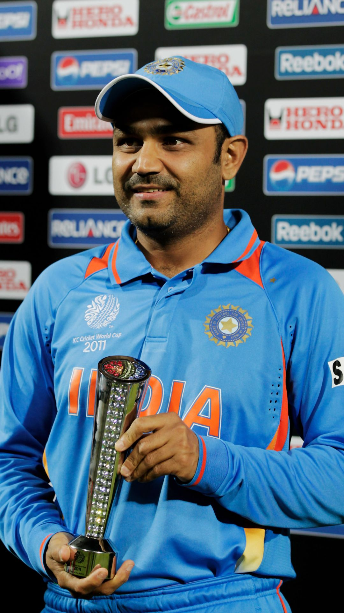
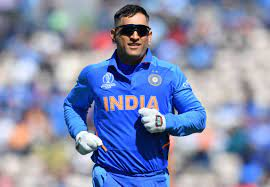
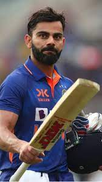

Sachin Tendulkar

Sachin Ramesh Tendulkar, is an Indian former international
cricketer who captained the Indian national team.
He is widely regarded as one of the greatest
batsmen in the history of cricket.Tendulkar took up cricket at the age of eleven, made his Test match debut
on 15 November 1989 against Pakistan in Karachi at the age of sixteen
Virendra Sehwag

Virender Sehwag is a former Indian cricketer who represented India from 1999 to 2013. Widely regarded as one
of the most destructive openers and one of the greatest batsman of his era, he played for Delhi Capitals in
IPL and Delhi and Haryana in Indian domestic cricket.
M.S. Dhoni

Mahendra Singh Dhoni (born 7 July 1981) is an Indian professional cricketer. He is a right handed batter and
a wicket-keeper. Widely regarded as one of the most prolific wicket-keeper-batsman and captain, he
represented the Indian cricket team and was the captain of the side in limited-overs formats.
Virat Kohli

Virat Kohli (born 5 November 1988) is an Indian international cricketer and the former captain of the Indian
national cricket team. He currently represents Royal Challengers Bangalore in the IPL and Delhi in domestic
cricket. Kohli is widely regarded as one of the greatest batsmen in the history of cricket.